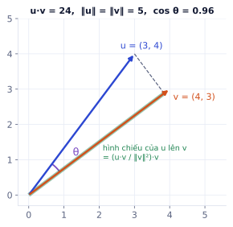
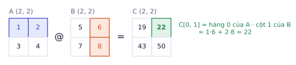
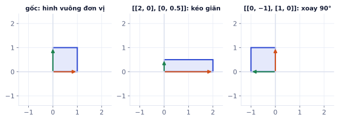
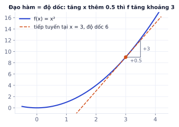
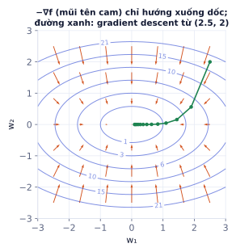
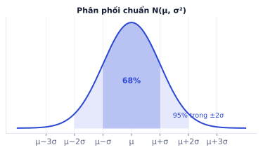
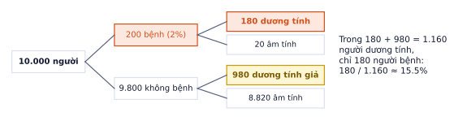
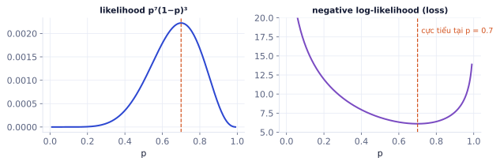

Toán cho AI: đại số tuyến tính, giải tích, xác suất
Giai đoạn P0 · Nền móngTuần 1–3Có nội dung đầy đủ
Ba nhánh toán chống lưng cho mọi model: đại số tuyến tính (dữ liệu và trọng số là ma trận), giải tích (gradient cho biết sửa trọng số theo hướng nào), xác suất (loss và dữ liệu nhiễu). Bài này chỉ dạy phần bạn thật sự dùng, đi từ trực giác tới công thức, và mỗi công thức đều kiểm chứng được bằng vài dòng numpy.
Vector và tích vô hướng
Vì sao cần học
Trong ML, mọi thứ đều thành vector: một ảnh 28×28 là vector 784 số, một câu văn là embedding 1024 số, một khách hàng là vector các đặc trưng (tuổi, số đơn, tổng chi). Khi đã là vector, "hai thứ giống nhau đến đâu" trở thành một phép tính: tích vô hướng.
Vector là gì
Vector là một danh sách số có thứ tự. Với 2 hoặc 3 số, bạn có thể hình dung nó là mũi tên từ gốc tọa độ: u = (3, 4) là mũi tên đi 3 bước sang phải, 4 bước lên trên. Với 784 số thì không vẽ được, nhưng mọi công thức vẫn y nguyên.
Các phép cơ bản làm từng phần tử:
u + v = (u₁ + v₁, u₂ + v₂, …) cộng hai mũi tên nối đuôi nhau
c · u = (c·u₁, c·u₂, …) kéo dài hoặc thu ngắn mũi tên
Độ dài (norm)
‖u‖₂ = √(u₁² + u₂² + … + uₙ²) norm L2: độ dài thật (Pythagore)
‖u‖₁ = |u₁| + |u₂| + … + |uₙ| norm L1: tổng giá trị tuyệt đối
Với u = (3, 4): ‖u‖₂ = √(9 + 16) = 5, ‖u‖₁ = 7. Norm xuất hiện trong regularization (phạt trọng số lớn: L2 ở weight decay, L1 làm nhiều trọng số về 0) và trong chuẩn hóa embedding.
Tích vô hướng và ý nghĩa hình học
u · v = u₁v₁ + u₂v₂ + … + uₙvₙ định nghĩa đại số: nhân từng cặp rồi cộng
u · v = ‖u‖ · ‖v‖ · cos θ định nghĩa hình học: θ là góc giữa hai vector
cos(u, v) = (u · v) / (‖u‖ ‖v‖) cosine similarity, từ −1 đến 1
Hai định nghĩa cho cùng một số. Từ đó suy ra: tích vô hướng dương khi hai vector cùng hướng (góc nhọn), bằng 0 khi vuông góc, âm khi ngược hướng.

Hai vector gần cùng hướng: góc θ nhỏ nên cos θ = 0.96 gần 1. Đoạn xanh lá là hình chiếu của u lên v, dài u·v / ‖v‖ = 24/5 = 4.8.
Ví dụ từng bước
So sánh embedding. Giả sử một model biến từ thành vector 3 chiều (số thật thì có hàng trăm chiều):
importnumpyasnpe={"vua":np.array([0.9,0.8,0.1]),"hoàng hậu":np.array([0.85,0.75,0.2]),"quả táo":np.array([0.1,0.2,0.9])}cos=lambdaa,b:a@b/(np.linalg.norm(a)*np.linalg.norm(b))cos(e["vua"],e["hoàng hậu"])# 0.996 rất giốngcos(e["vua"],e["quả táo"])# 0.303 khác xa
Đây chính là cách tìm kiếm ngữ nghĩa và RAG ở P4 hoạt động: biến câu hỏi và tài liệu thành vector, lấy các tài liệu có cosine cao nhất.
Một neuron là một tích vô hướng
Neuron nhận đầu vào x, có trọng số w và bias b, tính z = w · x + b. Ví dụ x = (1, 2, 3), w = (0.5, −1, 2), b = 0.5: z = 0.5 − 2 + 6 + 0.5 = 5. Trọng số dương lớn nghĩa là "đặc trưng này đẩy kết quả lên", âm là "kéo xuống". Học máy là đi tìm w và b tốt.
Lỗi hay gặp
So khoảng cách khi độ dài vector khác nhau. Hai đoạn văn cùng chủ đề nhưng một đoạn dài gấp đôi có thể cho embedding dài hơn, khiến tích vô hướng lớn hơn dù nghĩa không giống hơn. Cosine chia cho độ dài nên chỉ so hướng. Nhiều thư viện chuẩn hóa embedding về độ dài 1 sẵn; khi đó tích vô hướng bằng cosine luôn.
Tự kiểm tra nhanh
Với u = (1, 2, 2) và v = (2, 0, 1):
Ma trận và phép nhân ma trận
Vì sao cần học
Một lớp Linear trong mạng nơ-ron là một ma trận trọng số. Đưa một batch 128 ảnh qua lớp đó là một phép nhân ma trận, chạy song song trên GPU. Hiểu phép nhân ma trận là hiểu deep learning tính toán gì.
Ma trận và shape
Ma trận là bảng số m hàng × n cột, shape (m, n). Trong ML có hai cách nhìn:
Như một bảng dữ liệu: mỗi hàng là một mẫu, mỗi cột là một đặc trưng. X shape (128, 784) là 128 ảnh, mỗi ảnh 784 điểm ảnh.
Như một phép biến đổi: nhân ma trận với vector biến vector đó thành vector khác (kéo giãn, xoay, chiếu sang không gian khác số chiều).
Quy tắc nhân
A shape (m, n) nhân B shape (n, p) cho C shape (m, p). Phần tử C[i, j] là tích vô hướng giữa hàng i của A và cột j của B. Điều kiện bắt buộc: số cột của A bằng số hàng của B (hai số n ở giữa phải khớp, rồi "biến mất").

Mỗi ô của C là một tích vô hướng hàng × cột. Ô C[0, 1] lấy hàng 0 của A (xanh) và cột 1 của B (cam).
Ví dụ từng bước
Tính tay A @ B với A = [[1, 2], [3, 4]], B = [[5, 6], [7, 8]]:
A=np.array([[1,2],[3,4]]);B=np.array([[5,6],[7,8]])A@B# [[19 22] [43 50]]B@A# [[23 34] [31 46]] ← khác! nhân ma trận không giao hoánA*B# [[ 5 12] [21 32]] ← * là nhân từng phần tử, không phải nhân ma trận
Mỗi hàng của H là 256 neuron tính cho một ảnh; mỗi neuron là một tích vô hướng như ở mục trước. Một phép @ làm 128 × 256 = 32.768 tích vô hướng cùng lúc.
Ma trận như một phép biến đổi
Nhân ma trận (2, 2) với mọi điểm của mặt phẳng là biến đổi cả mặt phẳng. Cột thứ nhất của ma trận cho biết vector (1, 0) đi đâu, cột thứ hai cho biết (0, 1) đi đâu:

Ma trận [[2, 0], [0, 0.5]] kéo dài trục ngang gấp đôi, nén trục dọc một nửa. Ma trận [[0, −1], [1, 0]] xoay 90°: (1, 0) thành (0, 1).
Mạng nơ-ron xếp chồng nhiều phép biến đổi như vậy, xen giữa là hàm phi tuyến (ReLU), để "uốn" không gian dữ liệu tới khi các lớp tách ra được.
Vài tính chất cần nhớ
Tính chất
Ý nghĩa
(A @ B) @ C = A @ (B @ C)
kết hợp được, nên có thể tính theo thứ tự rẻ hơn
A @ B ≠ B @ A
không giao hoán, thứ tự quan trọng
(A @ B).T = B.T @ A.T
chuyển vị đảo thứ tự, gặp khi tính gradient
I @ A = A
ma trận đơn vị np.eye(n) không đổi gì
Ghi nhớ: (m, n) @ (n, p) → (m, p). Viết shape bên cạnh mỗi dòng code; hầu hết lỗi deep learning là lỗi shape.
Lỗi hay gặp
Dùng * thay cho @. Với hai ma trận vuông cùng shape, cả hai đều chạy không báo lỗi nhưng cho kết quả khác hẳn. Trong PyTorch cũng vậy: * là nhân từng phần tử, @ (hoặc torch.matmul) mới là nhân ma trận.
Đào sâu thêm
Chi phí tính toán. Nhân (m, n) @ (n, p) cần m·n·p phép nhân và gần ấy phép cộng. Lớp Linear(784, 256) với batch 128 tốn khoảng 128 × 784 × 256 ≈ 25,7 triệu phép nhân. Model ngôn ngữ lớn tốn gần như toàn bộ thời gian vào các phép nhân ma trận kiểu này, nên GPU được thiết kế để làm đúng một việc: nhân ma trận thật nhanh. Ở P9 bạn sẽ ước lượng chi phí train model theo đúng cách đếm này.
Tự kiểm tra nhanh
X shape (32, 10), W shape (10, 4), V shape (4, 1).
Đạo hàm, gradient và quy tắc dây chuyền
Vì sao cần học
Train một model nghĩa là chỉnh hàng triệu trọng số để loss giảm. Với mỗi trọng số, ta cần biết: tăng nó một chút thì loss tăng hay giảm, và bao nhiêu? Câu trả lời là đạo hàm. Gom đạo hàm của mọi trọng số lại là gradient, và mọi thuật toán train (SGD, Adam) đều đi theo gradient.
Đạo hàm là độ dốc
Đạo hàm f′(x) đo f thay đổi bao nhiêu khi x tăng một chút:
f′(x) ≈ (f(x + h) − f(x)) / h với h rất nhỏ
Với f(x) = x² tại x = 3: f′(3) = 6. Nghĩa là quanh x = 3, tăng x thêm 0.5 thì f tăng khoảng 6 × 0.5 = 3. Trên đồ thị, đạo hàm là độ dốc của tiếp tuyến.

Tại x = 3, tiếp tuyến có độ dốc 6. Gần điểm đó, đường cong và tiếp tuyến gần như trùng nhau: đạo hàm là "xấp xỉ tuyến tính" của hàm.
Bảng đạo hàm bạn dùng thường xuyên
Hàm
Đạo hàm
Gặp ở đâu
xⁿ
n·xⁿ⁻¹
loss bình phương (MSE)
eˣ
eˣ
softmax
ln x
1/x
cross-entropy
σ(x) = 1/(1 + e⁻ˣ)
σ(x)(1 − σ(x))
sigmoid, logistic regression
max(0, x)
1 nếu x > 0, 0 nếu x < 0
ReLU
c · f(x)
c · f′(x)
hằng số đi ra ngoài
f(x) + g(x)
f′(x) + g′(x)
đạo hàm của tổng là tổng đạo hàm
Đạo hàm riêng và gradient
Hàm nhiều biến (loss phụ thuộc mọi trọng số) có đạo hàm riêng theo từng biến: giữ các biến khác cố định, đạo hàm theo biến đang xét.
Ví dụ từng bước
f(x, y) = x²·y tại (x, y) = (2, 3):
∂f/∂x: coi y là hằng số → 2x·y = 2·2·3 = 12
∂f/∂y: coi x là hằng số → x² = 4
Gradient gom mọi đạo hàm riêng thành một vector: ∇f(2, 3) = (12, 4). Gradient chỉ hướng f tăng nhanh nhất; đi ngược gradient (−∇f) là hướng giảm nhanh nhất.

Đường đồng mức của f(w₁, w₂) = w₁² + 3w₂². Mũi tên cam là −∇f, luôn vuông góc với đường đồng mức và chỉ vào đáy. Đường xanh: mỗi bước đi một đoạn theo −∇f.
Gradient descent: dùng gradient để học
Quy tắc cập nhật cốt lõi của mọi thuật toán train:
w ← w − η · ∂L/∂w η (eta) là learning rate: bước đi dài bao nhiêu
Ví dụ từng bước
Tìm w làm L(w) = (w − 3)² nhỏ nhất, bắt đầu từ w = 0, η = 0.1. Đạo hàm L′(w) = 2(w − 3).
Bước
w
L′(w)
w mới = w − 0.1·L′(w)
1
0
−6
0.6
2
0.6
−4.8
1.08
3
1.08
−3.84
1.464
w tiến dần về 3, mỗi bước chậm lại vì gradient nhỏ dần khi gần đáy. η quá lớn (ví dụ 1.1) thì w nhảy qua đáy và văng ra xa hơn; η quá nhỏ thì cần hàng nghìn bước.
Quy tắc dây chuyền
Khi L phụ thuộc a, và a phụ thuộc w:
∂L/∂w = ∂L/∂a · ∂a/∂w
Trực giác: nếu w tăng 1 làm a tăng 2, và a tăng 1 làm L tăng 3, thì w tăng 1 làm L tăng 2 × 3 = 6. Một mạng nơ-ron là chuỗi hàm lồng nhau, nên gradient của trọng số lớp đầu là tích các đạo hàm dọc theo chuỗi. Backpropagation chỉ là áp dụng quy tắc này từ loss ngược về từng trọng số, tái sử dụng kết quả trung gian để khỏi tính lại.
Ví dụ từng bước
Neuron sigmoid: a = σ(z), z = w·x + b, với w = 2, x = 1, b = −1.
z = 2·1 − 1 = 1, a = σ(1) ≈ 0.731
∂a/∂z = σ(1)(1 − σ(1)) ≈ 0.731 × 0.269 ≈ 0.197
∂z/∂w = x = 1
∂a/∂w = ∂a/∂z · ∂z/∂w ≈ 0.197
Nếu x = 2 thì ∂z/∂w = 2 và ∂a/∂w gấp đôi: đầu vào càng lớn, trọng số tương ứng càng được sửa mạnh.
Kiểm tra gradient bằng số
Khi tự viết backward, bạn kiểm tra bằng gradient số (sai phân trung tâm):
f′(x) ≈ (f(x + h) − f(x − h)) / 2h
f=lambdax:x**2(f(3+1e-5)-f(3-1e-5))/2e-5# 6.00000000004 khớp đạo hàm thật 6
Lỗi hay gặp
Chọn h sai. h quá lớn thì xấp xỉ kém; h quá nhỏ thì sai số làm tròn của số thực chiếm ưu thế. Với sin tại x = 1: h = 0.1 sai khoảng 9·10⁻⁴, h = 10⁻⁵ sai khoảng 10⁻¹¹ (tốt nhất), h = 10⁻¹² lại sai tới 10⁻⁵. Dùng h khoảng 10⁻⁵ với float64, và đừng kiểm tra gradient bằng float32.
Tự kiểm tra nhanh
L(w, b) = (w·x + b − y)² với x = 3, y = 10, tại w = 2, b = 1. Gợi ý: đặt e = w·x + b − y, rồi dùng quy tắc dây chuyền.
Xác suất và thống kê cơ bản
Vì sao cần học
Dữ liệu thật có nhiễu, model trả về xác suất chứ không phải chắc chắn, trọng số được khởi tạo ngẫu nhiên, diffusion cộng nhiễu Gaussian vào ảnh. Xác suất là ngôn ngữ để nói về những thứ không chắc chắn đó, và thống kê là cách đo chúng từ dữ liệu.
Biến ngẫu nhiên và phân phối
Biến ngẫu nhiên là một đại lượng có thể nhận nhiều giá trị, mỗi giá trị với một xác suất. Phân phối cho biết xác suất đó. Ví dụ xúc xắc: X nhận 1 đến 6, mỗi mặt xác suất 1/6. Tổng xác suất mọi giá trị luôn bằng 1.
Kỳ vọng, phương sai, độ lệch chuẩn
Kỳ vọng E[X] = Σ x · P(x) trung bình có trọng số theo xác suất
Phương sai Var(X) = E[(X − E[X])²] bình phương khoảng cách tới trung bình, tính trung bình
Độ lệch chuẩn σ = √Var(X) cùng đơn vị với X, dễ diễn giải hơn
Ví dụ từng bước
Xúc xắc: E[X] = (1 + 2 + … + 6)/6 = 3.5. Phương sai = trung bình của (x − 3.5)²:
Từ dữ liệu [1, 3, 5, 7]: trung bình 4, phương sai (9 + 1 + 1 + 9)/4 = 5, độ lệch chuẩn √5 ≈ 2.236 (chia cho n). Nếu chia cho n − 1 (np.std(x, ddof=1), "độ lệch chuẩn mẫu") thì ra √(20/3) ≈ 2.582. Với dữ liệu lớn hai cách gần như bằng nhau; khi so với thư viện khác, nhớ kiểm tra họ dùng cách nào (pandas.std() mặc định là n − 1, numpy.std() mặc định là n).
Tính chất hay dùng
E[aX + b] = a·E[X] + b
Var(aX + b) = a²·Var(X) cộng hằng số không đổi độ tản ra
Var(X + Y) = Var(X) + Var(Y) nếu X, Y độc lập
Tính chất cuối giải thích vì sao khởi tạo trọng số phải chia cho √n: tổng của n số độc lập có phương sai gấp n lần, nên đầu ra của neuron sẽ "nổ" nếu không thu nhỏ trọng số. Bạn sẽ gặp lại ở P2 (khởi tạo He/Xavier) và P3 (chia √d_k trong attention).
Phân phối chuẩn (Gaussian)
N(μ, σ²) có hình chuông đối xứng quanh μ. Khoảng 68% giá trị nằm trong μ ± σ, 95% trong μ ± 2σ, 99.7% trong μ ± 3σ. Mô phỏng 100.000 mẫu bằng numpy cho 68.4% và 95.5%, đúng như lý thuyết.

Quy tắc 68–95–99.7 của phân phối chuẩn. Giá trị cách trung bình hơn 3σ rất hiếm, nên hay được dùng làm ngưỡng phát hiện ngoại lai.
Gaussian có mặt khắp nơi: khởi tạo trọng số (torch.randn), nhiễu trong diffusion (P5), giả định sai số của hồi quy tuyến tính (P1).
Đào sâu thêm
Vì sao Gaussian phổ biến đến vậy? Định lý giới hạn trung tâm: tổng (hoặc trung bình) của nhiều đại lượng ngẫu nhiên độc lập có phân phối gần Gaussian, bất kể từng đại lượng phân phối thế nào. Chiều cao, sai số đo, điểm thi đều là tổng của rất nhiều yếu tố nhỏ, nên gần hình chuông. Cũng vì vậy mà đầu ra của một neuron (tổng của nhiều tích wᵢxᵢ) thường gần Gaussian.
Tự kiểm tra nhanh
Thời gian phản hồi của một API có trung bình 200 ms, độ lệch chuẩn 20 ms, phân phối gần chuẩn.
Bayes và xác suất có điều kiện
Vì sao cần học
"Model báo email này là spam, khả năng nó thật sự là spam là bao nhiêu?" là câu hỏi xác suất có điều kiện. Hiểu Bayes giúp bạn đọc đúng precision/recall ở P1 và không bị đánh lừa bởi những con số "chính xác 99%".
Xác suất có điều kiện
P(A | B) là xác suất A khi đã biết B xảy ra:
P(A | B) = P(A và B) / P(B)
Biết B nghĩa là thu hẹp "thế giới" về những trường hợp B đúng, rồi đếm trong đó bao nhiêu A cũng đúng.
Công thức Bayes
Bayes đảo chiều điều kiện, từ thứ dễ đo sang thứ ta cần:
P(A | B) = P(B | A) · P(A) / P(B)
P(B) = P(B | A)·P(A) + P(B | không A)·P(không A)
P(A): prior, niềm tin ban đầu (tỉ lệ bệnh trong dân số)
P(B | A): likelihood, độ nhạy của xét nghiệm
P(A | B): posterior, niềm tin sau khi thấy bằng chứng
Ví dụ từng bước
Bệnh có tỉ lệ 2%. Xét nghiệm phát hiện đúng 90% người bệnh, nhưng báo nhầm dương tính 10% người khỏe. Một người có kết quả dương tính: khả năng họ bị bệnh là bao nhiêu?
Cách dễ nhất là đếm người thay vì nhân xác suất:

Hình dung 10.000 người. Người khỏe đông gấp 49 lần, nên 10% báo nhầm của họ (980 người) lấn át 180 người bệnh thật.
Bằng công thức: 0.9 × 0.02 / (0.9 × 0.02 + 0.1 × 0.98) ≈ 0.155. Chỉ 15.5%, dù xét nghiệm "đúng 90%". Bài tập 5 cho bạn tự tính một trường hợp khác.
Bài học cho ML: khi lớp cần tìm hiếm (gian lận, bệnh hiếm, lỗi sản phẩm), một model có tỉ lệ báo nhầm nhỏ vẫn sinh ra phần lớn cảnh báo là nhầm. Đó là lý do ta cần precision chứ không chỉ accuracy.
Tự kiểm tra nhanh
20% email là spam. Từ "khuyến mãi" xuất hiện trong 60% email spam và 5% email thường. Một email có từ "khuyến mãi":
Log, exp và maximum likelihood
Vì sao cần học
Gần như mọi loss phân loại (cross-entropy, negative log-likelihood) và mọi model ngôn ngữ đều được train bằng cùng một nguyên lý: chọn tham số làm dữ liệu quan sát được "có khả năng xảy ra nhất". Mục này cho thấy vì sao nguyên lý đó dẫn tới công thức loss có log.
Log và exp
Tính chất
Ý nghĩa trong ML
log(a · b) = log a + log b
tích nhiều xác suất thành tổng, không tràn số
log(aⁿ) = n · log a
số mũ thành hệ số
log tăng đơn điệu
cực đại của f và của log f ở cùng chỗ
log 1 = 0, log p < 0 khi p < 1
−log p ≥ 0, càng lớn khi p càng nhỏ
e^(log x) = x
exp và log là hai phép ngược nhau
Ví dụ: −log(0.9) ≈ 0.105 (đoán đúng khá chắc, loss nhỏ), −log(0.1) ≈ 2.303 (gán xác suất thấp cho đáp án đúng, loss lớn).
Maximum likelihood qua ví dụ đồng xu
Tung một đồng xu 10 lần, được 7 ngửa 3 sấp. Xác suất ngửa p bằng bao nhiêu thì hợp lý nhất?
Likelihood là xác suất thu được đúng dữ liệu này nếu xác suất ngửa là p:
L(p) = p⁷ · (1 − p)³
Thử vài giá trị: L(0.5) ≈ 0.00098, L(0.7) ≈ 0.00222, L(0.9) ≈ 0.00048. Giá trị lớn nhất ở p = 0.7, đúng bằng tỉ lệ ngửa quan sát được.

Trái: likelihood đạt đỉnh tại p = 0.7. Phải: lấy −log biến bài toán tìm đỉnh thành tìm đáy, và đáy vẫn ở p = 0.7. Đây chính là một "loss".
Từ likelihood tới loss
Với n mẫu độc lập, likelihood là tích n xác suất. Tích nhiều số nhỏ nhanh chóng tràn về 0 trên máy tính (tích 1.100 số 0.5 đã thành đúng 0.0). Nên ta lấy log để biến tích thành tổng, rồi đổi dấu để thành bài toán cực tiểu:
max Π p(yᵢ | xᵢ) ⟺ min −Σ log p(yᵢ | xᵢ)
Vế phải là negative log-likelihood, và với phân loại nó chính là cross-entropy loss: với mỗi mẫu, lấy xác suất model gán cho đáp án đúng, cộng −log của nó. Ở ví dụ đồng xu, NLL tại p = 0.7 là 6.109, tại p = 0.5 là 6.931: p = 0.7 có loss thấp hơn.
Ghi nhớ: log biến tích thành tổng và giữ nguyên vị trí cực trị. Vì vậy loss gần như luôn có log, và "train model" nghĩa là "làm dữ liệu thật có xác suất cao nhất dưới model".
Đào sâu thêm
Tính softmax cho ổn định. Softmax tính eˣⁱ / Σ eˣʲ. Với x = (1000, 1001, 1002), e¹⁰⁰⁰ tràn thành vô cùng và kết quả là nan. Mẹo: trừ đi giá trị lớn nhất trước (eˣ⁻ᵐ / Σ eˣʲ⁻ᵐ cho cùng kết quả vì e⁻ᵐ triệt tiêu ở tử và mẫu), được (0.090, 0.245, 0.665). PyTorch làm sẵn điều này trong F.cross_entropy, và đó là lý do bạn nên đưa logits vào hàm loss thay vì tự tính softmax rồi lấy log.
Tự kiểm tra nhanh
Model phân loại 3 lớp gán xác suất cho đáp án đúng của 2 mẫu lần lượt là 0.9 và 0.5.
Tóm tắt bài và thuật ngữ
Chủ đề
Công thức cốt lõi
Dùng ở đâu
Tích vô hướng
u·v = Σuᵢvᵢ = ‖u‖‖v‖cos θ
neuron, cosine similarity, attention
Nhân ma trận
(m, n) @ (n, p) → (m, p)
lớp Linear, cả batch một lúc
Đạo hàm
độ dốc, f′(x) ≈ (f(x+h) − f(x−h))/2h
gradient check
Gradient descent
w ← w − η·∂L/∂w
mọi thuật toán train
Dây chuyền
∂L/∂w = ∂L/∂a · ∂a/∂w
backpropagation
Thống kê
E[X], Var, σ, quy tắc 68–95
chuẩn hóa, khởi tạo, phát hiện ngoại lai
Bayes
P(A|B) = P(B|A)P(A)/P(B)
precision, lớp hiếm
Maximum likelihood
min −Σ log p(yᵢ|xᵢ)
cross-entropy, model ngôn ngữ
Thuật ngữ
Nghĩa
dot product
tích vô hướng
norm L1 / L2
tổng giá trị tuyệt đối / độ dài Euclid
cosine similarity
độ giống về hướng, từ −1 đến 1
matrix multiplication
nhân ma trận, ký hiệu @
transpose
chuyển vị, đổi hàng thành cột
derivative / partial derivative
đạo hàm / đạo hàm riêng
gradient
vector các đạo hàm riêng, hướng tăng nhanh nhất
learning rate
độ dài bước cập nhật η
chain rule
quy tắc dây chuyền
expectation / variance
kỳ vọng / phương sai
prior / likelihood / posterior
niềm tin trước / khả năng của dữ liệu / niềm tin sau
maximum likelihood (MLE)
chọn tham số làm dữ liệu có xác suất cao nhất
negative log-likelihood (NLL)
−Σ log p, tên khác của cross-entropy khi phân loại
logits
điểm thô trước softmax
Ô tự chấm đã giải đúng0 / 5
Bài 1
Nhân ma trận bằng tay
tính tay
A = [[1, 2, 0], [0, 1, 3]] (2×3), B = [[1, 0], [2, 1], [0, 4]] (3×2). Tính C = A @ B.
Lời giải
C[0,0] = hàng 1 của A · cột 1 của B = 1·1 + 2·2 + 0·0 = 5. C[0,1] = 1·0 + 2·1 + 0·4 = 2. C[1,1] = 0·0 + 1·1 + 3·4 = 13. Kết quả C = [[5, 2], [2, 13]], shape (2, 2).
Bài 2
Cosine similarity
tính tay
u = [6, 8], v = [8, −6].
Lời giải
u · v = 48 − 48 = 0. ‖u‖ = ‖v‖ = √(36 + 64) = 10. cos = 0: hai vector vuông góc, không giống nhau chút nào về hướng dù có cùng độ dài.
Bài 3
Gradient của MSE
tính tay
L(w, b) = (w·x + b − y)² với x = 2, y = 7. Tính gradient tại w = 1, b = 1.
Gợi ý
Đặt e = w·x + b − y. Theo quy tắc dây chuyền: ∂L/∂w = 2e · x và ∂L/∂b = 2e.
Lời giải
e = 1·2 + 1 − 7 = −4. ∂L/∂w = 2·(−4)·2 = −16, ∂L/∂b = 2·(−4) = −8. Gradient âm nghĩa là tăng w và b sẽ làm loss giảm, đúng vì dự đoán 3 đang thấp hơn 7.
Bài 4
Trung bình và độ lệch chuẩn
tính tay
Dữ liệu: 2, 4, 4, 4, 5, 5, 7, 9. Dùng công thức chia cho n (như np.std mặc định).
Lời giải
Tổng 40, chia 8 được 5. Bình phương độ lệch: 9, 1, 1, 1, 0, 0, 4, 16, tổng 32, chia 8 được phương sai 4, độ lệch chuẩn 2.
Bài 5
Xét nghiệm và Bayes
tính tay
Một bệnh có ở 1% dân số. Xét nghiệm phát hiện đúng 99% người bệnh, nhưng cũng báo dương tính nhầm 5% người khỏe. Một người có kết quả dương tính. Xác suất người đó thật sự mắc bệnh là bao nhiêu?
Tử số: 0.99 × 0.01 = 0.0099. Mẫu số: 0.0099 + 0.05 × 0.99 = 0.0594. Kết quả ≈ 0.167, chỉ khoảng 1/6. Bài học cho ML: khi lớp dương hiếm, precision thấp dù recall cao. Bạn sẽ gặp lại ở bài đánh giá model.
Bài 6
Kiểm tra gradient bằng số
code
Viết numeric_grad(f, w, h=1e-5) trả về gradient số của hàm f tại vector w. Dùng nó kiểm tra gradient giải tích của loss logistic L(w) = −[y·log σ(w·x) + (1−y)·log(1 − σ(w·x))], biết ∇L = (σ(w·x) − y)·x.
Mỗi khái niệm trong bài một ô code kiểm chứng. Đây là cách học toán hiệu quả nhất cho kỹ sư: không tin công thức cho tới khi code xác nhận.
Các bước
Nhân ma trận: tự viết matmul(A, B) bằng ba vòng for, so với A @ B trên ma trận ngẫu nhiên (5, 7) @ (7, 3). In shape và sai số lớn nhất.
Cosine similarity: viết hàm, kiểm tra hai vector cùng hướng cho 1, ngược hướng cho −1, vuông góc cho 0.
Gradient số: dùng numeric_grad từ bài tập 6 để kiểm tra đạo hàm của σ(x), x³ và MSE.
Gaussian: rút 100.000 mẫu np.random.randn, vẽ histogram, đo tỉ lệ nằm trong ±1σ và ±2σ (phải gần 68% và 95%).
Cộng phương sai: rút X, Y độc lập chuẩn, kiểm tra Var(0.6X + 0.8Y) ≈ 1.
Bayes bằng mô phỏng: mô phỏng 1.000.000 người theo bài tập 5, đếm tỉ lệ người bệnh trong nhóm dương tính, so với công thức.
Xong khi
Gradient giải tích và gradient số khớp nhau đến 1e-6 cho cả ba hàm.
Tỉ lệ trong ±1σ nằm trong khoảng 0.68 ± 0.01.
Kết quả mô phỏng Bayes lệch công thức không quá 0.01.
Code tham khảo
importnumpyasnprng=np.random.default_rng(0)# 1. matmuldefmatmul(A,B):m,n=A.shape;n2,p=B.shapeassertn==n2,"số cột A phải bằng số hàng B"C=np.zeros((m,p))foriinrange(m):forjinrange(p):forkinrange(n):C[i,j]+=A[i,k]*B[k,j]returnCA,B=rng.random((5,7)),rng.random((7,3))print("matmul",np.abs(matmul(A,B)-A@B).max())# 4. Gaussianz=rng.standard_normal(100_000)print("±1σ:",np.mean(np.abs(z)<1),"±2σ:",np.mean(np.abs(z)<2))# 5. cộng phương saiX,Y=rng.standard_normal(1_000_000),rng.standard_normal(1_000_000)print("Var:",np.var(0.6*X+0.8*Y))# 6. Bayesn=1_000_000sick=rng.random(n)<0.01positive=np.where(sick,rng.random(n)<0.99,rng.random(n)<0.05)print("P(bệnh | +) mô phỏng:",sick[positive].mean())
Xong bài khiGradient giải tích và gradient số của bạn khớp nhau đến 1e-6.